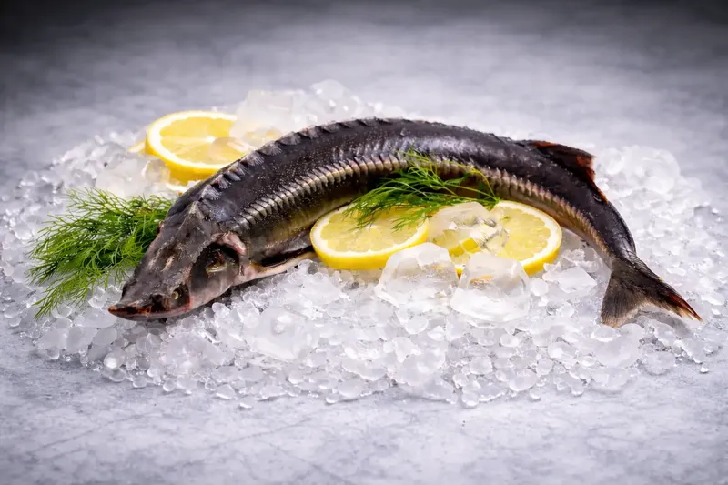

Охлажденная рыба
Рукал (ленка) охлажд. 3+ кг, РБ
Цена и наличие
- 3000+ г67,5 BYN / кгВ наличии
Данные на 23.11.2026.
Характеристики
- Размерный ряд
- 3000+ г
- Вид разделки
- непотрошеный
- Производитель
- РБ
Описание
Рукал — это гибрид русского осетра и калуги, вид рыбы из семейства осетровых.
ОСНОВНОЕ
Пищевая ценность на 100 г продукта белки – 16.4 г, жиры – 10.9 г, углеводы – 0 г Энергетическая ценность на 100 г продукта 163 ккал Тип питания низкокалорийный продукт, экологичный продукт Упаковка размерный ряд рыбы от 3+ кг Условия и срок хранения хранить в бытовом холодильнике, не больше суток, в нулевой зоне свежести или замораживать
ДОПОЛНИТЕЛЬНО
Охлажденный рукал (ленка) весом от 3+ кг — крупная рыба белорусского производства, подходящая для праздничного стола, больших семейных застолий и приготовления на компанию. Такой размер особенно удобен для разделки на крупные стейки, порционные куски или филе, а также для приготовления нескольких блюд из одной рыбы. Мясо рукала плотное, нежное и сочное, с характерным вкусом осетровой рыбы. Его можно запекать в духовке, готовить на гриле или мангале, жарить порционными кусками, тушить и использовать для приготовления ухи и других горячих рыбных блюд. Вес 3+ кг позволяет получить значительное количество порций. Крупную рыбу можно разделать на стейки для гриля, подготовить филе или использовать разные части для нескольких способов приготовления. Такой формат особенно удобен для большой семьи, компании гостей или праздничного мероприятия. Охлажденный рукал не требует предварительной разморозки и готов к дальнейшей разделке и приготовлению. Это практичный вариант, если рыбу планируется использовать вскоре после покупки и важно сохранить естественную текстуру мяса. Рукал хорошо сочетается с лимоном, свежей зеленью, овощами, сливочными и легкими соусами. При приготовлении крупной рыбы лучше использовать умеренное количество специй, чтобы сохранить натуральный вкус продукта. Крупный рукал подходит как для домашнего приготовления, так и для праздничной подачи. Его можно запечь крупными частями, приготовить стейки на гриле или использовать филе для порционных блюд. В продаже — рукал (ленка) охлажденный 3+ кг, Республика Беларусь. Фактический вес конкретной рыбы может отличаться в пределах указанного диапазона. Заказать охлажденного рукала 3+ кг можно для праздничного стола, большой компании, приготовления стейков, филе, запекания или гриля.